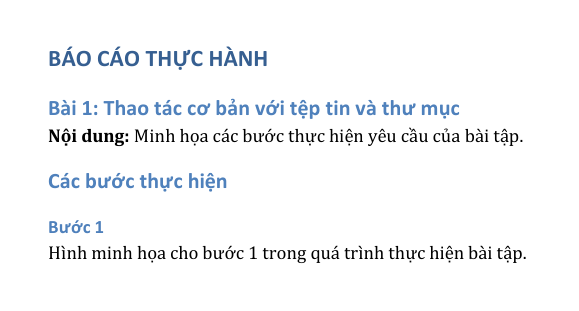
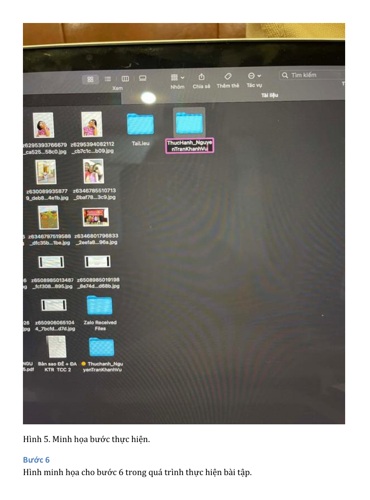
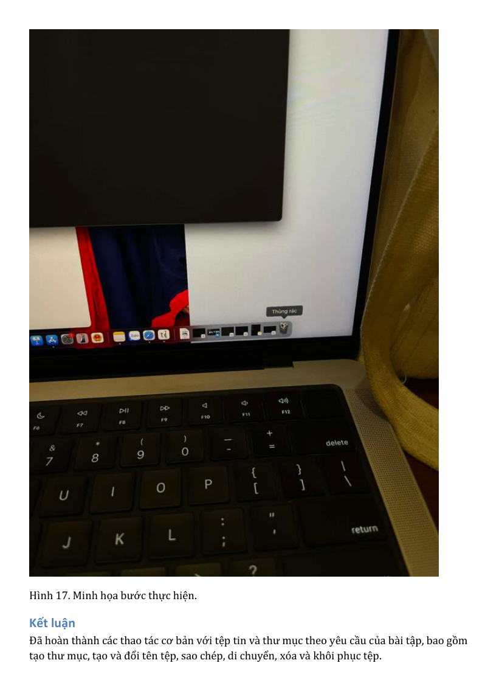
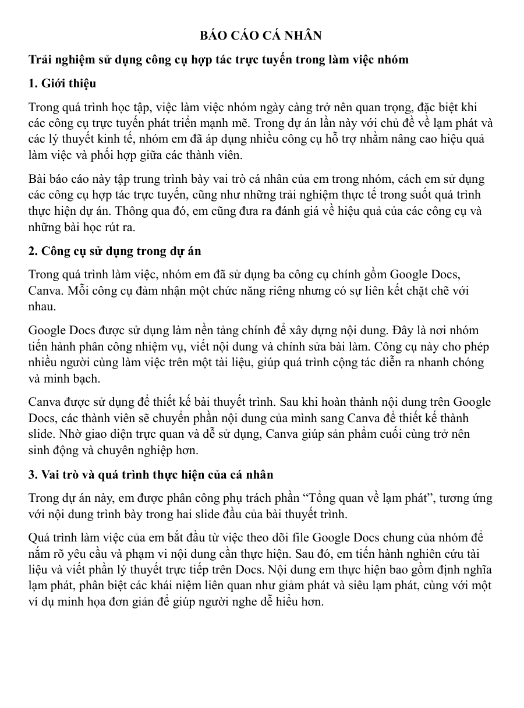
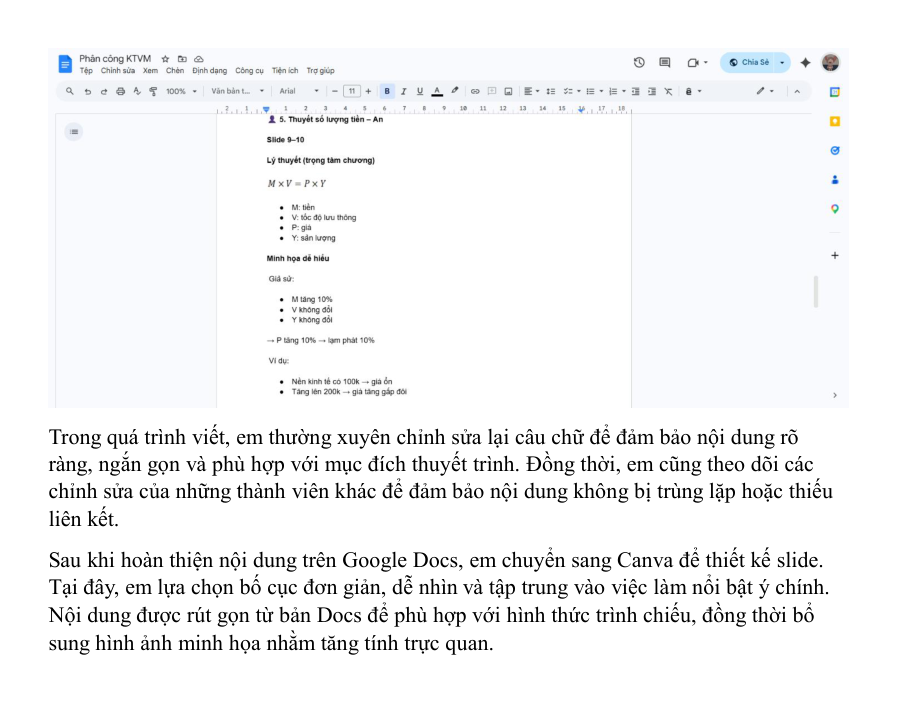
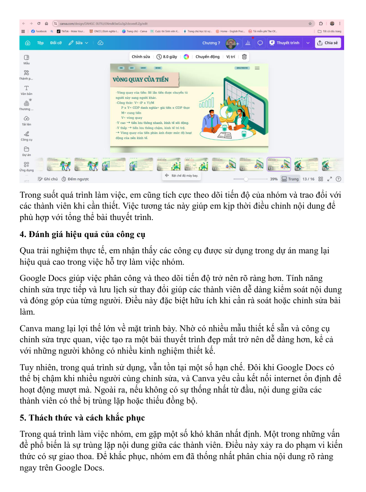
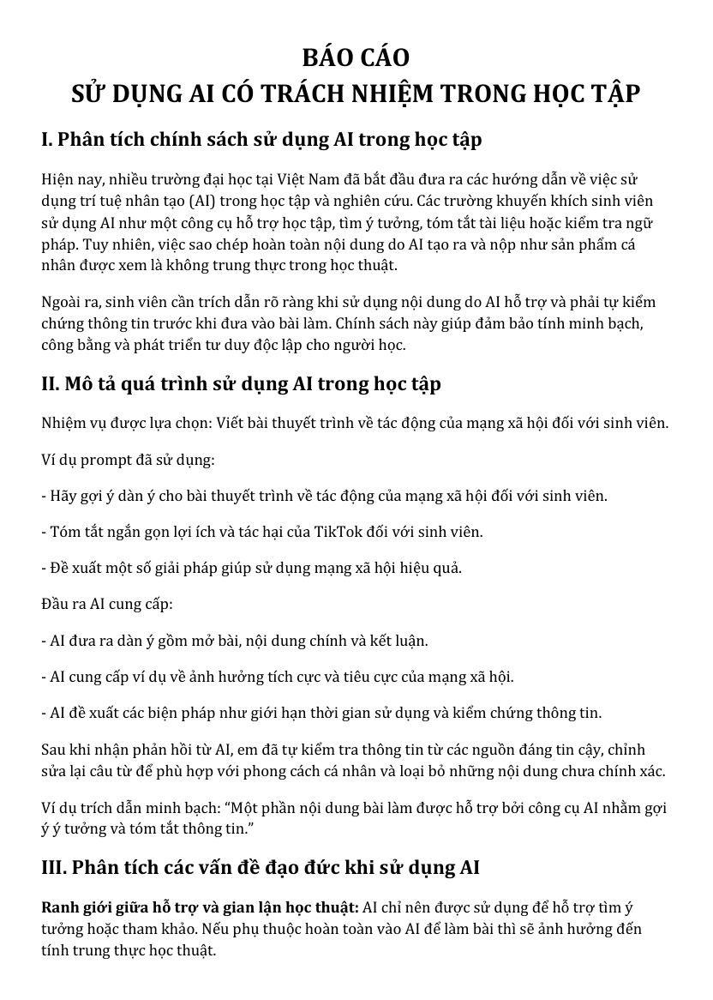
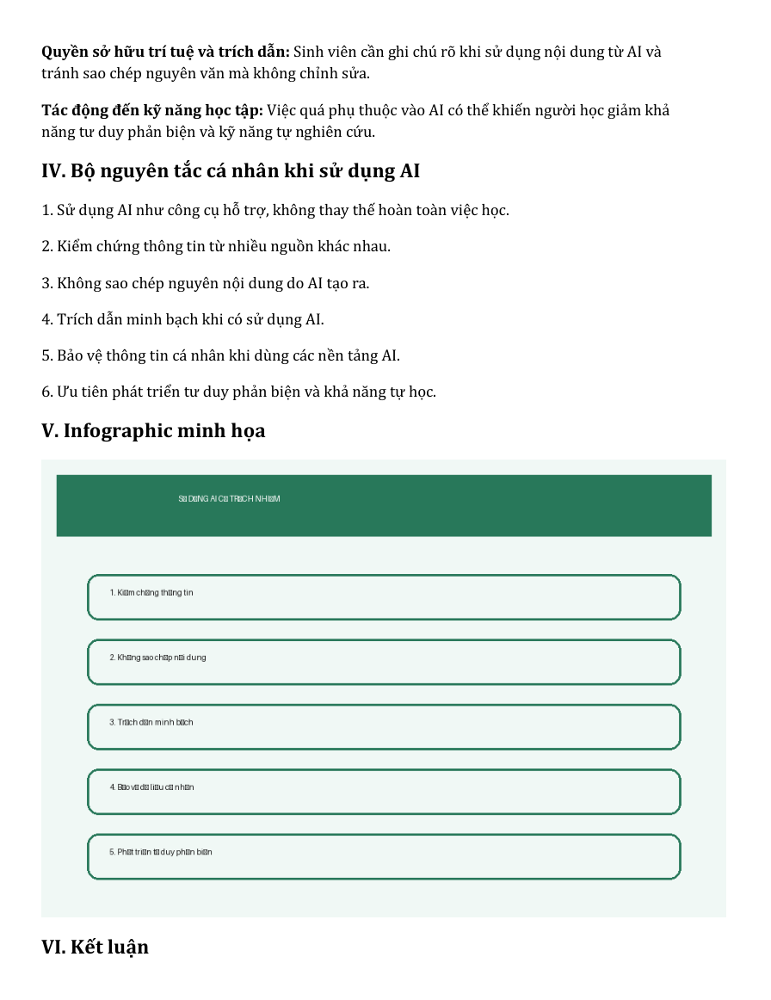
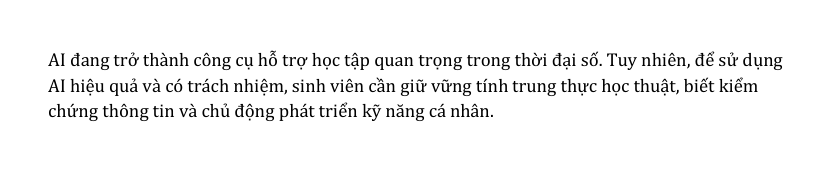

Thành tích học tập
Nỗ lực học tập đều đặn, theo dõi tiến độ cá nhân và hướng đến kết quả tốt trong từng học phần.
Study Abroad Portfolio
Sinh viên Trường Quốc tế - Đại học Quốc gia Hà Nội, định hướng phát triển ngoại ngữ, kiến thức chuyên môn và kỹ năng học thuật để chuẩn bị cho kế hoạch du học sau khi tốt nghiệp đại học.
Giới thiệu
Tôi là Nguyễn Trần Khánh Vũ, sinh viên Trường Quốc tế - Đại học Quốc gia Hà Nội. Tôi luôn cố gắng duy trì tinh thần học hỏi, chủ động tiếp cận kiến thức mới và rèn luyện những kỹ năng cần thiết cho hành trình học tập dài hạn.
Với mong muốn du học sau khi tốt nghiệp đại học, tôi tập trung cải thiện năng lực ngoại ngữ, củng cố nền tảng chuyên môn và phát triển khả năng thích nghi trong môi trường học thuật quốc tế.
Mục tiêu học tập
Nỗ lực học tập đều đặn, theo dõi tiến độ cá nhân và hướng đến kết quả tốt trong từng học phần.
Cải thiện năng lực ngoại ngữ để tự tin tiếp cận tài liệu, trao đổi học thuật và thích nghi với môi trường quốc tế.
Xây dựng nền tảng kiến thức có hệ thống, biết kết nối nội dung học với mục tiêu phát triển dài hạn.
Rèn kỹ năng tự học, quản lý thời gian, giao tiếp liên văn hóa và chuẩn bị hồ sơ học tập một cách chỉn chu.
Sở thích
Du lịch giúp tôi mở rộng góc nhìn, quan sát các nền văn hóa khác nhau và học cách thích nghi với những trải nghiệm mới. Sở thích này cũng kết nối tự nhiên với định hướng du học, nơi khả năng khám phá và chủ động học hỏi là một lợi thế quan trọng.
Định hướng cá nhân
Tập trung học tập nghiêm túc, cải thiện ngoại ngữ và tích lũy các kỹ năng cần thiết cho môi trường học thuật quốc tế.
Chuẩn bị kiến thức, năng lực tự học và hồ sơ cá nhân để sẵn sàng cho kế hoạch du học sau đại học.
Du học để nâng cao trình độ chuyên môn, mở rộng cơ hội nghề nghiệp và tích lũy kinh nghiệm trong môi trường quốc tế.
Minh bạch học thuật
Trong quá trình học tập, công nghệ và AI có thể hỗ trợ tìm kiếm tài liệu, lập kế hoạch, tóm tắt nội dung và gợi ý cách diễn đạt. Nội dung cuối cùng vẫn cần được kiểm chứng, điều chỉnh và trình bày trung thực theo nguồn dữ liệu hợp lệ.
Minh chứng học tập
Các minh chứng bên dưới được lấy từ PDF mới trong Bài 1 đến Bài 6, đã kiểm tra không chứa thông tin của sinh viên cũ. Mỗi bài thể hiện một nhóm kỹ năng hỗ trợ quá trình học tập, làm việc số và chuẩn bị cho môi trường học thuật quốc tế.
Mục tiêu: Rèn thao tác cơ bản với tệp tin và thư mục, hình thành thói quen tổ chức dữ liệu học tập khoa học.
Quá trình: Thực hiện các bước tạo thư mục, đổi tên, sao chép, di chuyển, xóa và khôi phục tệp theo yêu cầu bài tập.
Sản phẩm: PDF báo cáo thực hành kèm hình minh họa từng bước.
Kỹ năng: Quản lý tài liệu, đặt tên rõ ràng, lưu trữ có hệ thống và thao tác tệp chính xác.
Trang 1, 6, 18



Mục tiêu: Luyện kỹ năng tìm kiếm tài liệu học thuật và đánh giá độ tin cậy của nguồn thông tin.
Quá trình: Xác định chủ đề, chọn nguồn, so sánh tài liệu và tổng hợp nhận xét theo tiêu chí rõ ràng.
Sản phẩm: PDF về chủ đề ứng dụng AI trong giáo dục, có bảng đánh giá nguồn và tài liệu tham khảo.
Kỹ năng: Tìm kiếm có chiến lược, chọn lọc nguồn, đọc tài liệu và trình bày tham khảo học thuật.
Mục tiêu: Hiểu cách viết prompt rõ mục tiêu, bối cảnh và định dạng đầu ra khi sử dụng công cụ AI.
Quá trình: Phân tích tác vụ học tập, thiết kế prompt cơ bản, cải tiến prompt và rút ra nguyên tắc sử dụng.
Sản phẩm: PDF báo cáo về ứng dụng Prompt Engineering trong học tập.
Kỹ năng: Đặt câu hỏi rõ ràng, kiểm soát yêu cầu, đánh giá phản hồi AI và cải thiện chất lượng học tập.
Mục tiêu: Rèn kỹ năng làm việc nhóm trực tuyến, phối hợp nội dung và theo dõi tiến độ bằng công cụ số.
Quá trình: Sử dụng Google Docs và Canva để xây dựng nội dung, thiết kế slide, chỉnh sửa và phản hồi trong nhóm.
Sản phẩm: PDF báo cáo cá nhân về trải nghiệm dùng công cụ hợp tác trực tuyến trong dự án nhóm.
Kỹ năng: Giao tiếp số, phân công rõ ràng, quản lý tiến độ và chuyển đổi nội dung học thuật thành sản phẩm trình bày.
Trang 1, 3, 5



Mục tiêu: Sử dụng AI tạo sinh để hỗ trợ xây dựng ý tưởng, kịch bản, hình ảnh và nội dung truyền thông.
Quá trình: Dùng nhiều công cụ AI để tạo bản nháp, so sánh kết quả, chỉnh sửa và hoàn thiện sản phẩm cuối.
Sản phẩm: PDF báo cáo dự án nội dung TikTok, infographic và poster về kỹ năng học tập hiệu quả.
Kỹ năng: Sáng tạo nội dung, viết prompt, đánh giá đầu ra AI và kiểm soát chất lượng sản phẩm số.
Mục tiêu: Nhận diện rủi ro khi dùng AI và xây dựng nguyên tắc cá nhân để giữ liêm chính học thuật.
Quá trình: Phân tích chính sách sử dụng AI, mô tả quy trình học tập, đánh giá vấn đề đạo đức và đề xuất nguyên tắc sử dụng.
Sản phẩm: PDF báo cáo về sử dụng AI có trách nhiệm trong học tập, kèm infographic nguyên tắc cá nhân.
Kỹ năng: Kiểm chứng thông tin, trích dẫn minh bạch, bảo vệ dữ liệu cá nhân và duy trì tư duy phản biện.
Trang 1, 2, 3



Tổng kết
Portfolio này thể hiện định hướng học tập của Nguyễn Trần Khánh Vũ: nỗ lực đạt kết quả tốt, phát triển ngoại ngữ, chuẩn bị kiến thức và kỹ năng cần thiết để du học sau khi tốt nghiệp, từ đó mở rộng cơ hội nghề nghiệp và tích lũy trải nghiệm quốc tế.